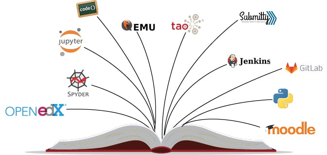
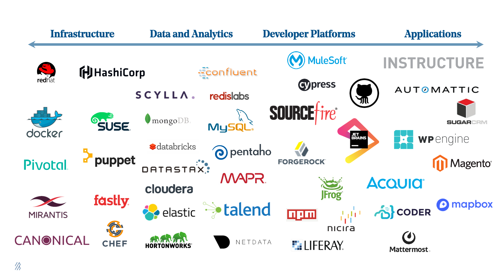
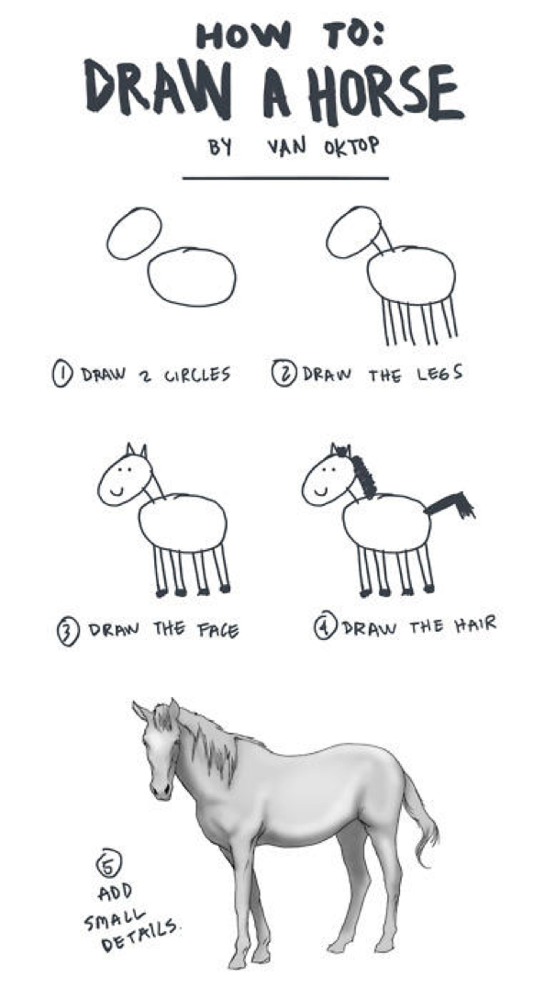
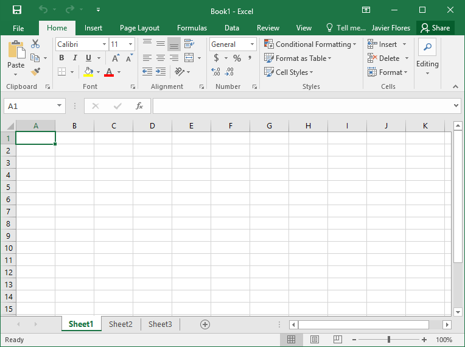
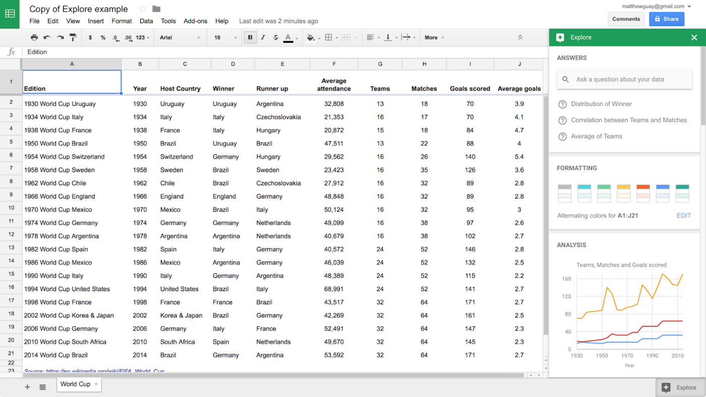
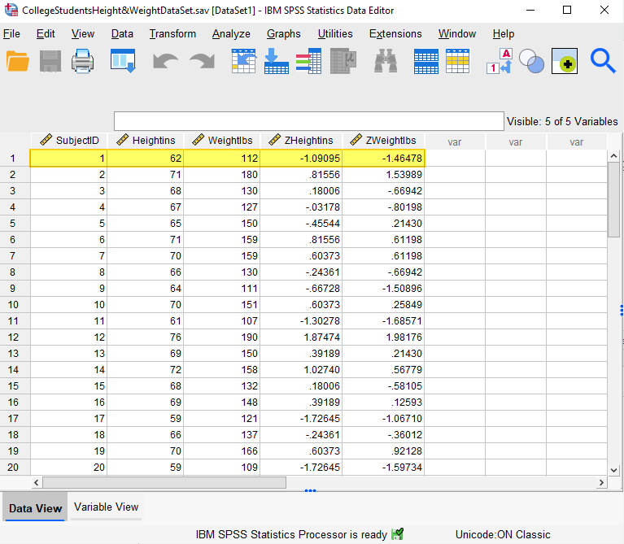
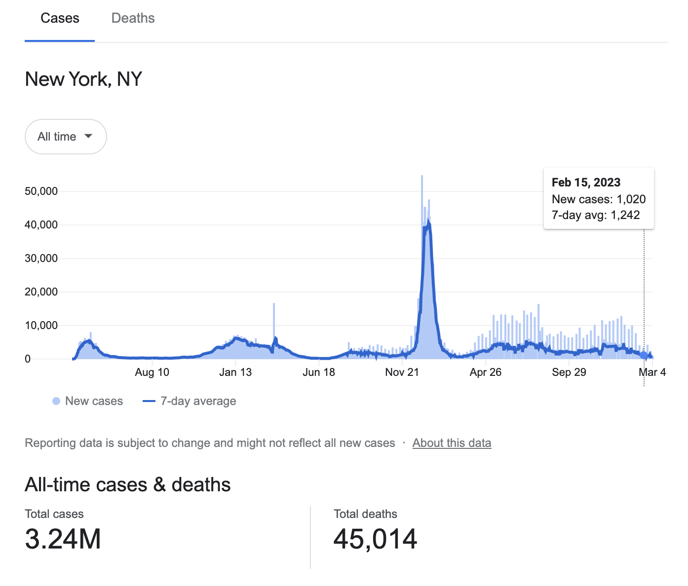
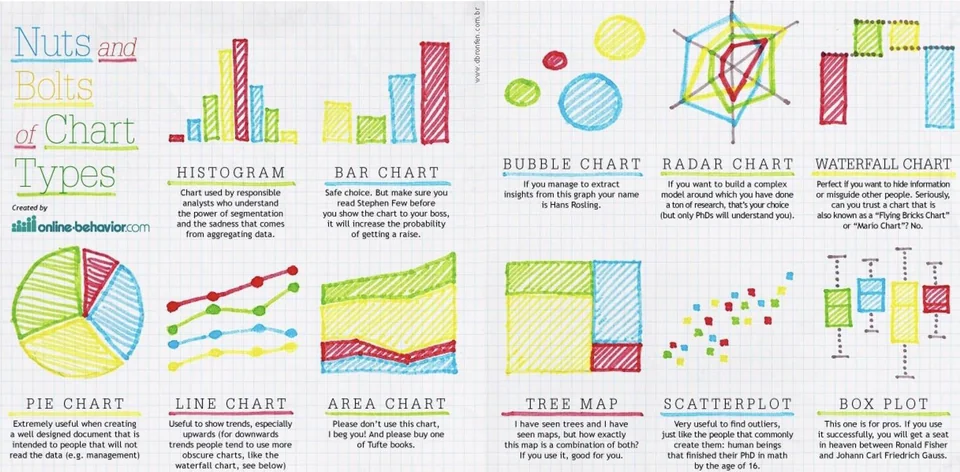

We’re going to talk about Open Source Software and Data Visualization in this talk.

About Your Presenter
Joy Payton (she/her) is a data educator who teaches scientists and health care workers how to write code, use version control, and visualize data. In her spare time she enjoys video games and singing in a chorus.
Source code (how the software is made) is open (people can modify it and use it without restrictions). Because the source code is publicly available, anyone can use the software for free.

Discuss
Question: is Microsoft Word open source software? Why or why not?
01:00
Two Kinds of Free
“Free” as in beer and “free” as in speech.
Question: is all software you can download for free (like the Chrome browser) considered open source? Why or why not?
01:00
Examples of Open Source
The Linux operating system
LibreOffice (an alternative to Microsoft Office)
Mozilla Firefox (a web browser)
RStudio and the R Language (data analysis)
Jupyter and the Python Language (data analysis)
Data Analysis Tools
Let’s take a pause and please turn to the folks near you and discuss this question:
If I were to give you a table of patient data from a DHMT, which included body measurements (such as arm circumference, height, and weight) for 500 two year old children and some information about their mothers (such as age at first childbirth, level of education, marital status, HIV status, etc.), what program or method would you use to decide if any of the characteristics of the mothers influenced the measurements of the children?
Feel free to mention software you might use or describe how you would use paper records or other methods.
04:00
Some Answers
Here are some of the answers you might have given:
Use Excel and use filters to specific data for different categories (like mothers with and without HIV) and use formulas to get averages of child measurements for each group
Upload data to Google Sheets and do some graphs there to show differences
Epidemiologist? You might have mentioned Stata to do some statistical testing by category (like teenage parenthood versus adult parenthood)
Social scientist? Maybe you prefer SPSS to do your statistical tests.
Some Answers (Continued)
Here are some of the answers you might have given:
Maybe you weren’t sure how you’d answer this question and would use your own eyes to look through the data and detect trends by just looking at the table and coming up with some hypotheses
You might have an electronic health record that you use to analyze data like this by category
Maybe you’d analyze this using a statistical programming language like R or Python
Maybe you’d just call your local statistician or demographer to do this work, because you’re not sure how to even start!
Other things I didn’t think about
Things to Consider
Let’s add some real life constraints here.
Whatever method you use should be easily repeatable by other people. You should be able to hand off your analysis to other DHMTs or people in other countries with different systems so they can do the same analysis on their early childhood data.
Data will be added at least once a year and you want to be able to redo the analysis quickly
You have to do this very cheaply (you’re going to share your methods with colleagues in Chad and South Sudan who have very few resources)
The data you’re analyzing is private and can’t be shared
03:00
Another Definition: Reproducibility
A data analysis is “reproducible” if it can be redone with relative ease.
For example, if I write down all the steps of how to make chocolate cake, such that you (who have very little experience baking cakes) can make a chocolate cake, that’s a “reproducible” recipe.
If, instead, I leave out some ingredients, or make my recipe with strange ingredients you can’t get, or make my instructions hard to understand, that recipe is “irreproducible” (not reproducible).

Why Does Reproducibility Matter?
It’s important in science to make our data analysis “recipes” as reproducible as possible, so that other people we work with can do the same analysis, we can do the same analysis again with new data, and we can share our analysis with other people in the health care and research world who can check our work and re-use our approaches for their own data!
Our Problem
If I were to give you a table of patient data from a DHMT, which included body measurements (such as arm circumference, height, and weight) for 500 two year old children and some information about their mothers (such as age at first childbirth, level of education, marital status, HIV status, etc.), what program or method would you use to decide if any of the characteristics of the mothers influenced malnutrition in the children?
Comparing Possible Answers: Excel
Use Excel and use filters to specific data for different categories (like mothers with and without HIV) and use formulas to get averages of child measurements for each group
Excel is not open source. While it’s not free, it’s not terribly expensive. But you will probably end up doing a lot of “point and click” work to filter data, make pivot tables, add visualizations, etc. Those steps will be annoying to write down and describe for other users.

Comparing Possible Answers: Google Sheets
Upload data to Google Sheets and do some graphs there to show differences
Google Sheets is not open source and it requires an internet connection, which might not be available to your colleagues in Chad and South Sudan. It also means uploading sensitive health data to the world’s most influential and powerful data broker, Google… not a great idea!

Comparing Possible Answers: Stata
Epidemiologist? You might have mentioned Stata to do some statistical testing by category (like teenage parenthood versus adult parenthood)
Stata is more expensive than Excel. You can use point-and-click with Stata, which has the same problems as point-and-click with Excel (remembering to write down all the steps in detail so another person can do exactly the same thing). But Stata also includes a scripted language.
Comparing Possible Answers: SPSS
Social scientist? Maybe you prefer SPSS to do your statistical tests.
Like Stata, SPSS costs money, in the hundreds of USD. Also, SPSS is mostly a point-and-click software with the same issues that we’ve mentioned before. But you can record SPSS syntax files (if you remember to do it) that make it easier to redo the same steps.

Comparing Possible Answers: Manual Review
Maybe you weren’t sure how you’d answer this question and would use your own eyes to look through the data and detect trends by just looking at the table and coming up with some hypotheses
What if I gave you data for 1500 patients? 15000? Using your instincts and eyeballs can be useful for small data, but health care data is growing faster and faster. It’s also really hard to transmit your expertise or describe how you see trends and how patterns emerge for you just by looking at the data.
Comparing Possible Answers: EHR
You might have an electronic health record that you use to analyze data like this by category
EHRs / EMRs can have analysis tools inside, but what if your EHR is just for Botswana? How could you share your analysis method with your peers in other countries? Many EHRs are also proprietary (the opposite of open source, it means the software can’t be changed and the company that makes the software controls it and doesn’t share how it works).
Comparing Possible Answers: Languages like R and Python
Maybe you’d analyze this using a statistical programming language like R or Python
R and Python are free, open source languages.
The great thing about these languages is that you write computer code that does each step of your analysis, and you save the steps in a “script” (a list of steps).
BUT… writing computer code?!?!?! That requires some learning! And that’s why we’re here today.
Comparing Possible Answers: a Statistician
Maybe you’d just call your local statistician or demographer to do this work, because you’re not sure how to even start!
A statistician might choose to use R, or Python, or Excel, or Stata, or SPSS, or another solution like SAS or Matlab or … any number of things!
Comparing Possible Answers: Other Solutions
What else did you come up with? Can you think of the pros and cons of those solutions? I’ll pause here for a bit to give you a chance to think about it.
Summary
Open Source Software is better than point and click data analysis because:
It’s free!
Anyone can download and use it without a license or money
You can make a reproducible script
You’re going to learn how to use Python to do data analysis!
Data Visualization
Data Visualization is a way to transmit information about data using images like bar charts, scatter plots, and other graphs.
Why Explore With Data Visualization?
It can be hard to go through a lot of data and understand at a glance what it all means. But a graph can give you a lot of information at a glance. Consider the graphic below.

03:00
Types of Visualizations

Visual Signal
You can change lots of things in a data visualization:
Change the color of dots to represent sex
Change the size of a dot to represent the size of the community
Make the lines for 2023 solid and the line for expected 2024 dotted
Make dots different shapes: square for Maun, circle for Gaborone